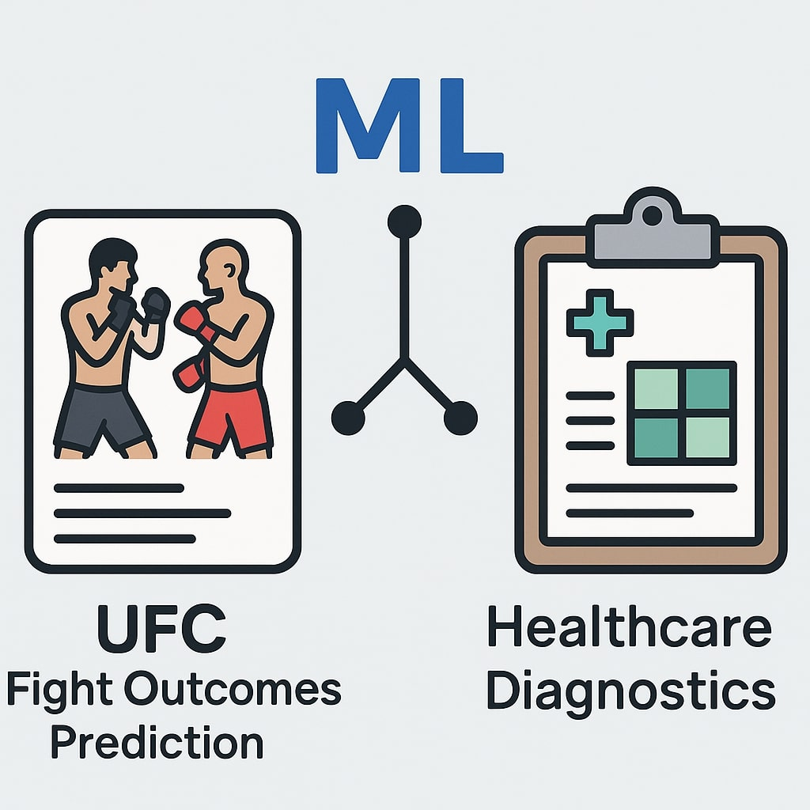

In this project, I designed and implemented 8 machine learning models across 2 domains: UFC fight outcome prediction (binary classification) and healthcare diagnostics (multiclass classification). Leveraged Logistic Regression, SVM, Random Forest, KNN, and others to predict winners and patient test results. Used advanced feature engineering, class balancing, hyperparameter tuning, and confusion matrix analysis to evaluate model robustness and real-world application performance.

In this project, I evaluated the impact of changes in the Effective Federal Funds Rate (EFFR) on sectoral stock market performance. The specific economic sectors analyzed included technology, healthcare, financial, and consumer discretionary. Over the period from January 2020 to August 2024, this study explored both the direct and broader economic implications of EFFR fluctuations on sector-specific ETFs. This analysis helps us examine how different sectors respond to changes in the EFFR, providing valuable insights for strategic planning in business contexts.

Tableau dashboard analyzing GRAB’s financials from 2019 to 2024 with trendlines for Revenue, EBITDA, Net Income, Free Cash Flow, and Operating Margin. Includes YoY growth metrics, expense breakdowns, and KPI visualizations.

In this project, I explored the relationship between treasury yields and mortgage rates over a four-year period (2020-2024). The study focuses on whether 10-year treasury yields can predict fluctuations in fixed-rate mortgages. This time-series analysis aims to determine if treasury yields serve as leading indicators or if there exists a lagged relationship. This analysis is useful as it aids in financial planning, investment strategies, and economic forecasting.

This dashboard focuses on the Airbnb market in NYC, exploring key metrics such as booking rates, average prices, and overall host activity. Through interactive charts and maps, it offers insights into how various neighborhoods compare in terms of price and popularity, highlighting trends and potential opportunities for hosts and renters alike. The analysis aims to provide stakeholders with a deeper understanding of the factors influencing the local Airbnb landscape, aiding in decision-making for both current and prospective Airbnb hosts.

In this project, I analyze the role that size plays in determining house prices in Nassau County, focusing particularly on the impact of livable square footage and lot size on property appraisal values. I use a robust multivariate log-linear regression analysis to explore these relationships across a sample of properties from West Hempstead, Garden City, and New Hyde Park. By analyzing these factors, the research aims to provide a more nuanced understanding of property valuation, offering valuable insights for homeowners, potential buyers, and real estate professionals about how size affects house prices. The findings underline the importance of considering both livable area and lot size in the real estate appraisal process, demonstrating that while both elements influence property values, the extent of their impact can vary significantly.

In this project, I created a database for an online store that would sell clothing in both PgAdmin & OrientDB. Alongside the database I created an automated system designed to simulate e-commerce transactions.
The system integrates complex database structures to manage products, customers, orders, and addresses. The core functionality includes a Python-based bot that generates random orders and customers at scheduled intervals, reflecting realistic e-commerce operations. Additionally, Node.js is used with OrientDB to handle similar tasks, emphasizing cross-platform versatility. The system also features a reporting bot, developed in Python, which provides real-time sales analytics, showcasing total revenue and units sold per product. This comprehensive setup not only simulates the transactional environment of an online store but also provides critical business intelligence through continuous data analysis and reporting.